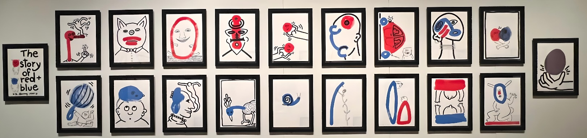

I am a researcher in machine learning, with a broad interest in updatable and interactive AI. My research asks: how should AI systems acquire, modify, and remove capabilities as they interact with the world over time?
My work spans areas such as interactive learning and reinforcement learning, machine unlearning and privacy, control theory, AI for science, LLMs and optimization, and draws on both theoretical analysis and empirical methods.
Currently at Biohub, applying reinforcement learning to protein engineering and, more broadly, developing frontier AI for the life sciences.
Prospective students. I am recruiting PhD students at Cornell Tech. Please apply through the Cornell CS PhD program and mention my name. I am excited to work with students who bring strength in areas such as mathematics, engineering, or deep learning, and who are eager to broaden their toolkit across theory and practice. Applicants from all backgrounds are encouraged.
Brief bio
Ayush Sekhari is a Senior Research Scientist at the Chan Zuckerberg Initiative (Biohub) and an incoming Assistant Professor of Computer Science at Cornell University, based at Cornell Tech in New York City. Previously, he was a postdoctoral researcher at MIT's Institute for Data, Systems, and Society (IDSS), hosted by Prof. Alexander (Sasha) Rakhlin. He earned his Ph.D. in Computer Science from Cornell University, advised by Prof. Karthik Sridharan and Prof. Robert D. Kleinberg, and his B.Tech. in Computer Science from IIT Kanpur, where he received the President's Gold Medal.
His research focuses on updatable machine learning: developing algorithms that efficiently update ML models as they interact with changing environments and real-world constraints. His work has been recognized with the Best Student Paper Award at COLT 2019 and multiple oral and spotlight presentations at premier ML conferences, including NeurIPS and ICLR. He was also a finalist for the Meta AI PhD Fellowship in Statistics in 2022.
Core Research Themes
-
Learning New Capabilities Through Interaction
I develop methods that enable AI systems to improve through feedback, experience, and interaction with users and environments. This includes work in reinforcement learning and interactive learning.
-
Controlling How AI Systems Change
I study how models can be updated reliably after deployment—incorporating new information, removing outdated or undesirable behaviors, and adapting without compromising safety or privacy. This connects to machine unlearning, continual learning, privacy, and the broader problem of building AI systems whose behavior can be deliberately shaped over time.
-
AI for Science
I am particularly interested in using these ideas to advance scientific discovery in areas such as mathematics and biology, including applying reinforcement learning to protein engineering.
Recent News
- Nov 2026Starting at Cornell Tech as an Assistant Professor of Computer Science.
- Oct 2026Attending COLM in San Francisco. Let us meet if you are around!
- Sep 2025Our paper on Gaussian sketching for differential privacy accepted to NeurIPS 2025.
- Jul 2025Finished postdoc at MIT. Started working at Chan Zuckerberg Initiative on AI for protein engineering.
- Jul 2025Area chair for NeurIPS 2025.
Older news
- Jun 2025New paper on the space complexity of learning-unlearning algorithms, accepted to COLT 2025.
- Apr 2025New paper on efficient agnostic RL under reset access to the environment, accepted to COLT 2025.
- Jan 2025New paper on practical watermarking of Large Language Models (LLMs), accepted to ICML 2025.
- Jan 2025Our paper on deterministic linear Bellman complete MDPs accepted at ICLR 2025 as an Oral Presentation.
- Jan 2025Our paper on evaluating machine unlearning algorithms accepted at ICLR 2025.
- Dec 2024Short talk at the Princeton Language and Intelligence seminar on "Machine Unlearning: Where does the practice stand?".
- Dec 2024Talk at Rutgers University on learning-unlearning schemes.
- 2024Area chair for Algorithmic Learning Theory (ALT) 2025.
- Oct 2024Yunbei Xu and I organized a session on Theoretical Aspects of Interactive Learning under the Applied Probability Society at INFORMS 2024, with speakers Noah Golowich, Zeyu Jia, Kevin Jamieson, and Yunzhong Xu.
- Oct 2024Attended Cornell's ORIE Young Researchers Workshop in Ithaca, NY.
- Sep 2024Attended the Mathematical and Scientific Foundations of Deep Learning Annual Meeting at the Simons Foundation, NYC.
- Jan 2024Two papers accepted at ICLR 2024.
Selected Awards
- Outstanding Paper Award, Trustworthy AI for Good (AI4GOOD) Workshop at ICML2026
- Best Student Paper Award, COLT2019
- Finalist, Meta AI PhD Fellowship2022
- Best Talk Award (Honorable Mention), New York Academy of Sciences2020
- President's Gold Medal, IIT Kanpur2016
Publications
In keeping with the convention in mathematical sciences, most of my papers list authors alphabetically by last name. These papers are marked with "@" next to my name. Otherwise, * denotes equal contribution.
Selected Publications
-
Imitation learning that actively queries a noisy expert only when needed, with tight bounds on regret and the number of queries.
-
Combining offline data with online interaction yields RL algorithms that are provably efficient and strong in practice.
-
Characterizes when low regret is possible for bandits and RL with adversarial rewards or dynamics.
-
Unlearning algorithms with provable deletion guarantees, and a separation between machine unlearning and differential privacy.
-
A watermark embedded in the weights of an LLM, with formal statistical guarantees and no cost in generation latency.
-
Nearly matching upper and lower bounds for finding near-stationary points in stochastic convex optimization.
Invited Talks
Teaching
Teaching Assistant, Cornell University
- Machine Learning Theory (graduate) · Fall 2018
- Introduction to Analysis of Algorithms · Spring 2018
- Machine Learning for Data Science · Fall 2017
Teaching Assistant, IIT Kanpur
- Fundamentals of Computing · Fall 2015
Professional Service
Learning Theory Alliance
I am a part of the Learning Theory Alliance (LeT-All) organizing committee.
Our mission is to develop a strong, supportive learning theory community and ensure its healthy growth by fostering inclusive community engagement and encouraging active contributions from researchers at all stages of their careers.
Please feel free to contact us with any questions, feedback, or suggestions regarding LeT-All. We would love to hear from you.
Organization
- Organized the workshop on Updatable Machine Learning at ICML 2022 (with Prof. Jayadev Acharya and Prof. Gautam Kamath).
- Organized the workshop on Foundations of Post-training (FoPT) at COLT 2025 in Lyon (with Adam Block, Dylan Foster, Audrey Huang, Akshay Krishnamurthy, and Nived Rajaraman).
Volunteer
- Poster sessions committee, Women in Data Science, Cambridge 2024.
- Communications Committee, Learning Theory Alliance (2024–current).
- Organization of Mentoring Tables at the Fall 2023 Mentorship Workshop, Learning Theory Alliance.
Area Chair
- Conference on Neural Information Processing Systems (NeurIPS) 2025
Program Committee
- Algorithmic Learning Theory (ALT) 2024
- Conference on Learning Theory (COLT) 2021–24
Reviewing
- Journals: Journal of Complexity 2021, JMLR (2021–22)
- Conferences: NeurIPS (2019–24), ALT (2021–23), ICML (2019–21), ICLR (2019, 2023), AISTATS (2019, 2023), ISIT 2020, ITCS 2020, FORC 2021
- Workshops: Understanding and Improving Generalization in Deep Learning at ICML 2019, Updatable Machine Learning at ICML 2022
Misc
How to reach me
Please feel free to reach out if you think that we have shared interests. The best way to reach me is via email at as3663 [at] cornell [dot] edu.
Useful links
- "You and Your Research", Richard Hamming (June 6, 1995).
- "How to Have a Bad Career in Research/Academia", a talk by David Patterson.
- "Last Lecture: Achieving Your Childhood Dreams", a talk by Randy Pausch at CMU.
- Witty Quotes by J. Michael Steele.
- arXiv LaTeX Cleaner.
Personal interests
Outside my research activities, I find joy in indoor climbing, experimenting with plant-based cooking, and consuming an absurd amount of chocolate.
A fascinating art
In 1989, Keith Haring created a print series titled The Story of Red and Blue, where he depicted characters inspired by both well-known children's stories and more mysterious sources. Throughout the series, the red and blue hues alternate, eventually merging within a human hand, symbolizing unity and conveying a message of hope and optimism. I find this artwork incredibly captivating and hope you enjoy it as well.
